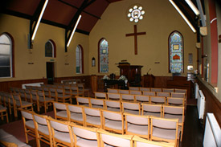
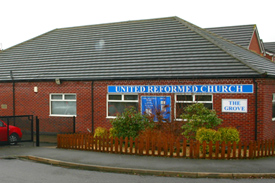

Hucknall United Reformed Church
Sunday Service: 10:30am
Communion on 1st and 3rd Sundays of the month
Communion on 1st and 3rd Sundays of the month
The Hucknall United Reformed Church is situated on Farleys Grove in Hucknall. We pride ourselves on our friendly atmosphere and extend a warm welcome to all.
 Bulletin Board
Forthcoming Services (10.30 a.m. unless stated otherwise)
Sunday 7 February
Rev Paul Burton (communion)
Sunday 14 February
Mr Chris Ford
Sunday 21 February
Mr Geoff Ware (communion)
Sunday 28 February
Mr Bryan Clarkson
Drop In for Toddlers, Babies and their Carers Mondays 1pm-3pm
Open House Wednesday 10 February
Lunchbox Saturday 20 February